Una plataforma para que los estudiantes de la UCC Medellín registren su reciclaje, lo validen en el punto de acopio y lo canjeen por horas de bienestar.
Ver pantallas Abrir en Figma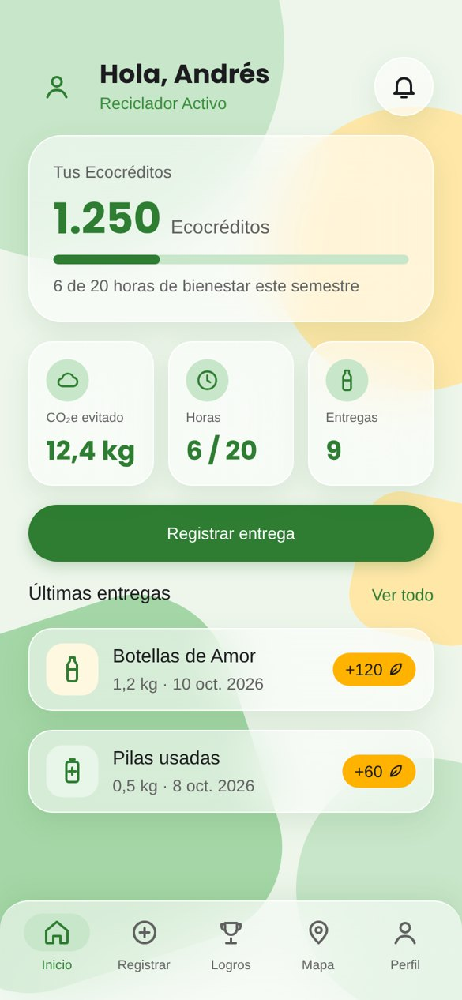
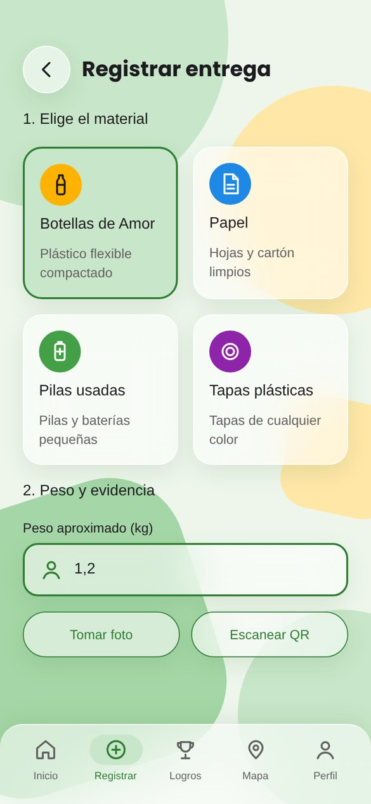
La universidad ya tenía campañas ambientales (Botellas de Amor, papel, pilas y tapas), pero ningún sistema registraba ni verificaba quién participaba. El esfuerzo no se reconocía y cumplir las horas de bienestar se sentía como un trámite.
Proyecto de diseño en un equipo de 3 estudiantes, siguiendo Design Thinking y gestionado con Kanban en Trello. El resultado es un prototipo navegable; no incluye desarrollo de backend.
Antes de dibujar pantallas investigamos a quién le estábamos diseñando y qué necesitaba.
Investigación de desktop, mapa de competencia (RECICLOS, Recypuntos, Lealtad Verde), encuesta y entrevistas.
User persona, punto de vista (POV), brief e hipótesis medible.
Preguntas "¿Cómo podríamos…?", FODA y matrices de viabilidad.
Design system, pantallas y prototipo navegable en Figma.
Pruebas de usabilidad con estudiantes (siguiente etapa).
Base Material Design 3, todo construido en Figma con variables de color (tema claro y oscuro), estilos de texto y componentes con variantes.
Geométrica y amigable; hace que un saldo como 1.250 se lea de un vistazo.
Muy legible en pantallas pequeñas, entre 11 y 16 px.
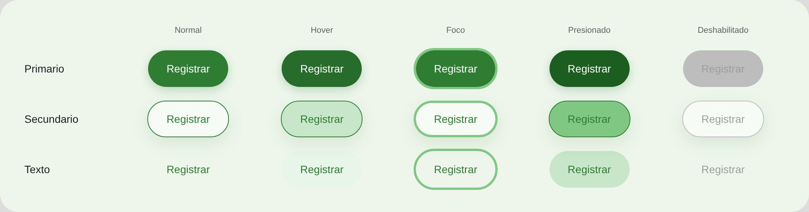
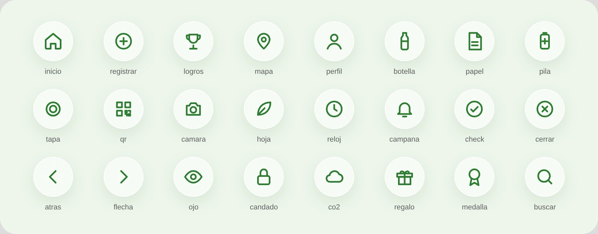
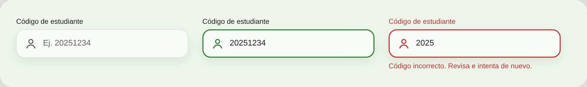
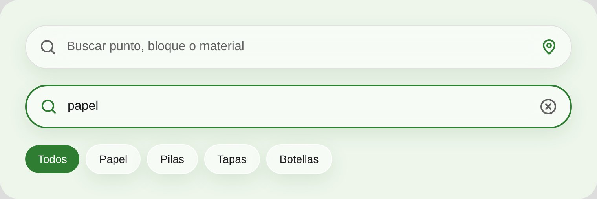
Desliza para ver el recorrido completo, incluido el flujo del encargado que valida las entregas y el modo oscuro.
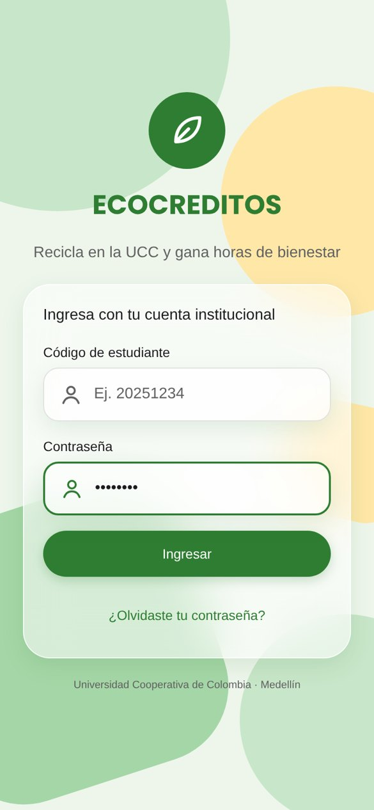
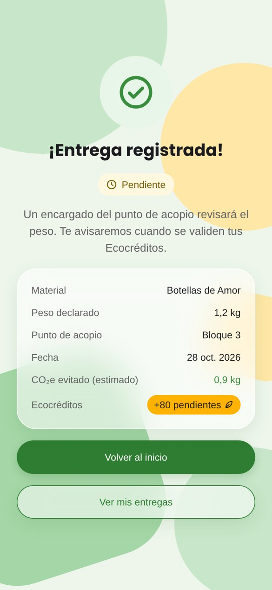
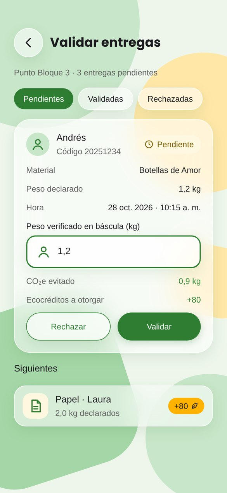
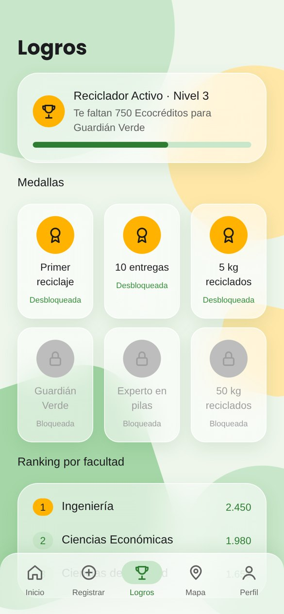
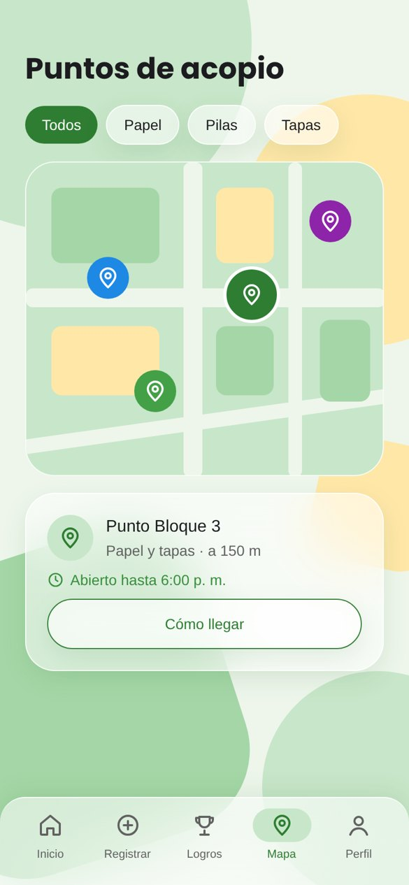
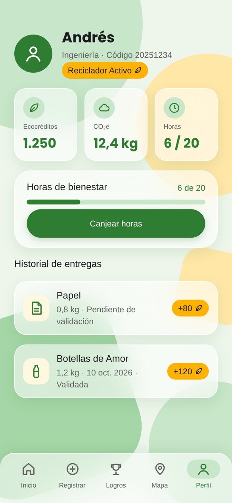
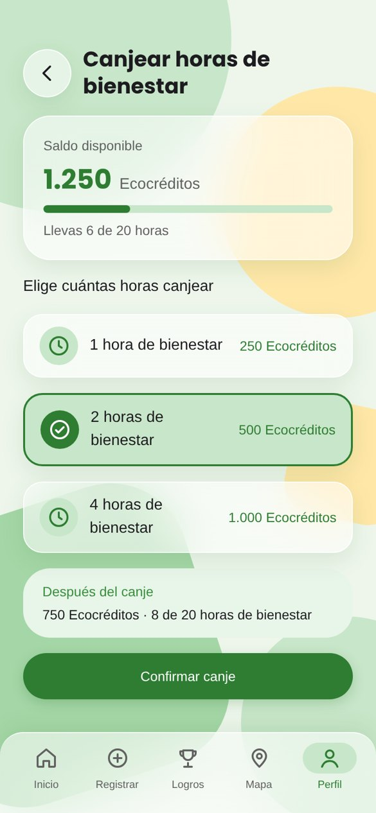
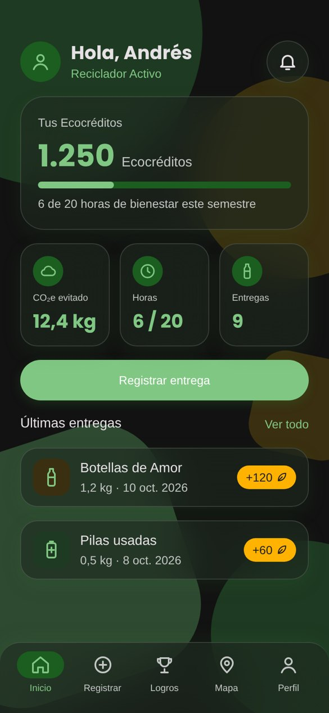
Los mismos componentes; el menú pasa a una barra lateral y el contenido se reparte en columnas.
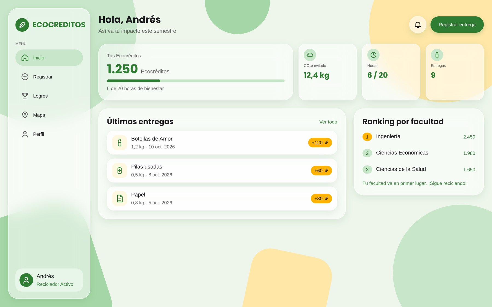
La encuesta y las entrevistas decidieron cosas concretas del diseño: registrar con QR o foto, mostrar el saldo y las horas apenas se inicia sesión, y canjear por horas de bienestar.
Construir variables, estilos y componentes antes de las pantallas permitió sacar la versión de PC y el modo oscuro sin rediseñar desde cero.